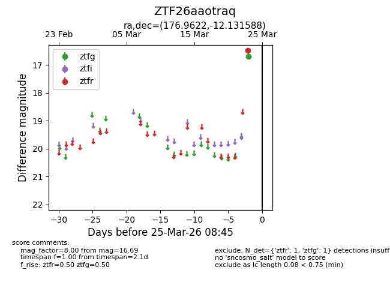
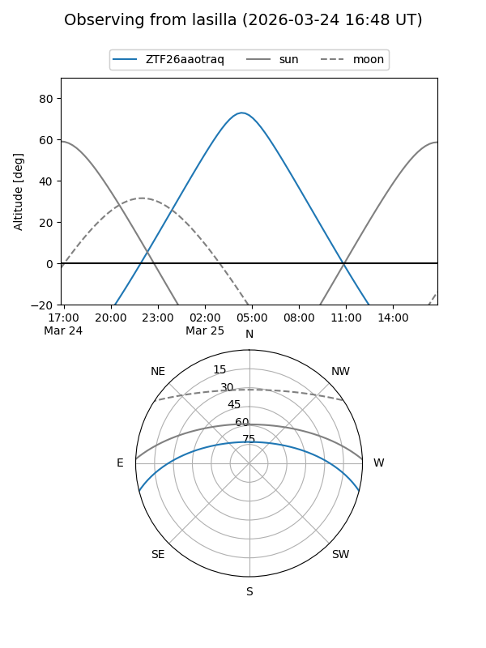
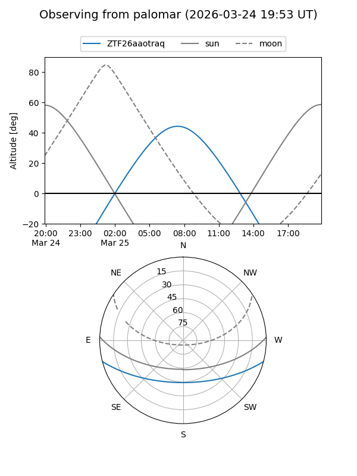

ZTF26aaotraq
Target ZTF26aaotraq at 2026-03-25 08:47
Aliases and brokers:
FINK: link
Lasair: link
ALeRCE: link
alt names
ZTF26aaotraq (ztf,fink_ztf)
Coordinates:
equatorial (ra, dec) = 176.9622,-12.13159
equatorial (HMS+DMS) = 11:47:50.94,-12:07:53.72
galactic (l, b) = (279.4285,+47.81719)
Flags:
Photometry:
last ztfg=16.69, ztfr=16.49
1 ztfg, 1 ztfr detections
Lightcurve

Visibility


Additional plots